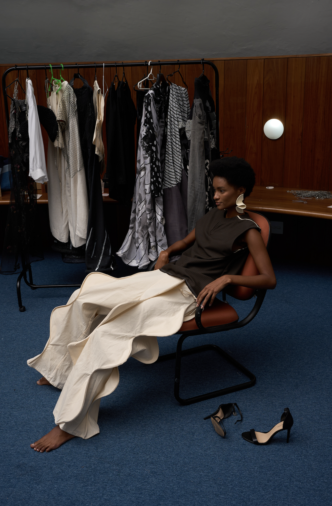
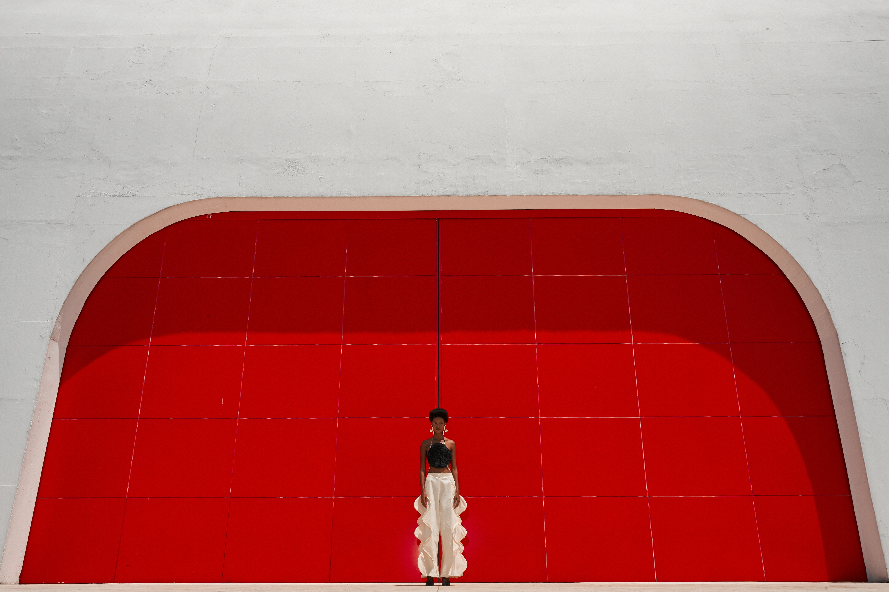
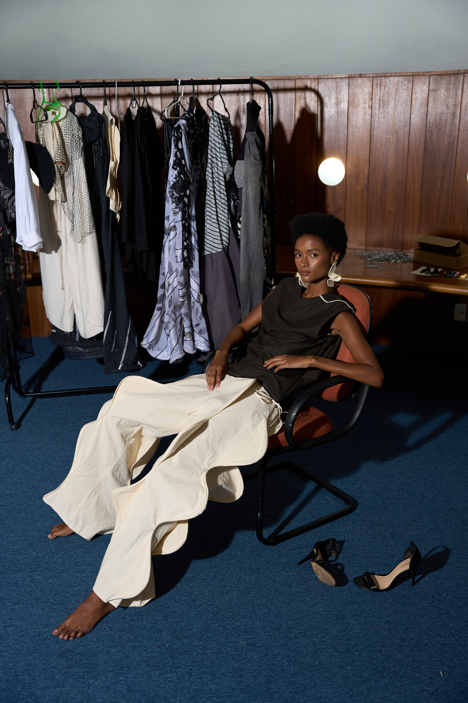
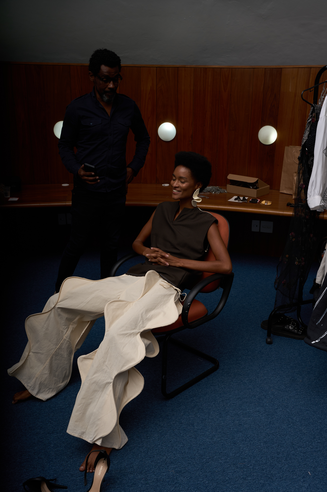

instituto niemeyer
2024
editorial “Niemeyer” para Festival Cidades Eco
Criativas, que reúne especialistas
e público para debates sobre cultura, moda,
tecnologia, entre outras disciplinas.
para o ensaio, calça op.1 no.1
(100% algodão cru)
e regata op.1 no.8
(100% lã fria de resgate industrial).


o evento, realizado pelo Instituto Niemeyer, tem patrocínio da Prefeitura de Niterói e da Delta Thinkers, organização da Contato Eventos e apoio dos BRICS e Sebrae.


team
direção criativa
@savory________
foto
@davidarrais @studiodavidarrais
assistência
@fabricia_arrais
filmmaker
@itsraelserafim
making of
@clar4araujo
styling e produção de moda
@savory________ @francisco46martins
ass. produção de moda
@frz.adri @kamila_viiih
beauty
@karinacorrea.sm
ass. beauty
@pamelapdias
modelos
@dudaborges_021 @cacaubporto @giulianapastura
apoio
@schoolmodels @schoolmodelsfashion @studiodavidarrais @sa.vo.ry